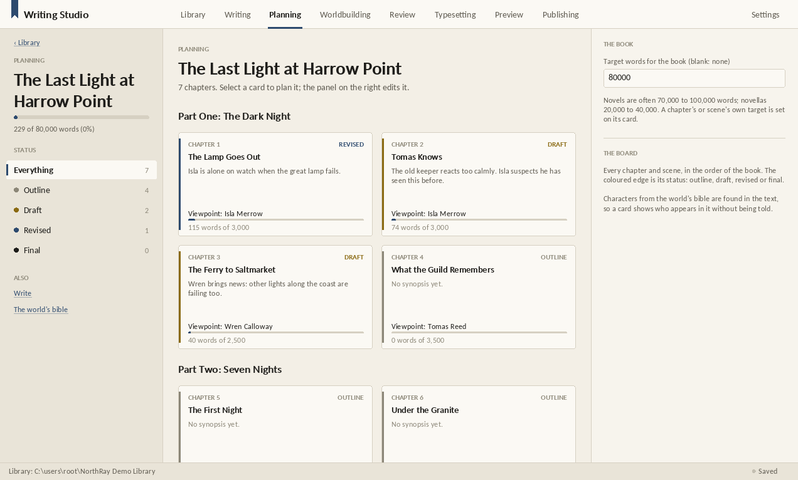

Writing and publishing
NorthRay Writing Studio
A writing and publishing studio for authors: worlds, series and books, through to finished editions.
NorthRay Software · Preview
Screenshots

The author library: worlds, series and books on a bookshelf. 
Planning: every chapter as a card, with status, viewpoint and word targets. 
Worldbuilding: the world's bible of characters, places, groups and lore. 
Review: what changed since a snapshot, word by word. 
Typesetting: the book laid out as printed pages. 
Publishing: a pre-flight check, spine width and print files for each edition.

About
NorthRay Writing Studio is a desktop app for writing and publishing books. It organises your work as worlds, series and books, and each book as parts, chapters and scenes, written in a calm, page-like editor that saves as you type, keeps earlier versions, and takes comments on the text. Pictures live in an artwork library, with crops and print-resolution checks that never touch the originals. Existing books can be imported from EPUB, Word, OpenDocument, HTML, Markdown and plain text, with PDF import as an experiment. Each book has a planning board, and each world keeps a bible of its characters, places and lore, showing where each appears in the books. Books are typeset into finished pages and previewed as an ebook on different devices, then exported as a print-ready PDF (PDF/X-1a) and an EPUB, after a pre-flight check that also gives the spine width for the cover. Everything stays on your PC; no account or subscription is needed.
What's in it
- IncludedAuthor Library: worlds, series, books
- IncludedManuscript editor: parts, chapters, scenes, versions
- IncludedImport: EPUB, Word, OpenDocument, HTML, Markdown, text (PDF experimental)
- IncludedArtwork and illustration control
- IncludedProfessional typesetting
- IncludedPrint and ebook previews
- IncludedEPUB and print-ready PDF export (first version)
- IncludedWorldbuilding: characters, places, lore and where they appear
- IncludedPlanning board: synopses, status, viewpoint, word targets
- IncludedReview: changes, snapshots, name checks, writing goals
- IncludedComments on the text
Features
- Author Library: worlds, series and books, with standalone and independent books
- Manuscript editor: parts, chapters and scenes, semantic paragraph styles, scene breaks, pictures and spell-check
- Saves as you type, keeps earlier versions of every chapter and scene, and a Trash you can restore from
- Artwork library: crop, size and align pictures without changing the originals, with print-resolution checks for your trim size
- Import from EPUB, Word (.docx), OpenDocument (.odt), HTML, Markdown and text; PDF import is experimental
- Reading order and chronological order for every series; drag and drop to organise
- Typesetting: justified, hyphenated pages with running heads and page numbers, shown as spreads, and exported as a PDF
- Worldbuilding: a bible of characters, places, groups, things, lore and events for each world, with relationships and the chapters each appears in
- Planning board: every chapter and scene as a card with its status, synopsis, viewpoint character, who appears in it, and word targets
- Review: compare any chapter with earlier versions or whole-book snapshots, check names against the world's bible, and track daily writing goals
- Comments: notes pinned to words in the text, resolved when they're dealt with, and listed for the whole book in Review
- Ebook preview on a phone, an e-reader and a tablet, with the reader's own text size, font and page colour
- Publishing: paperback, hardback, large-print and ebook editions with their own ISBNs; print-ready PDF/X-1a and EPUB 3 export, a pre-flight checklist, and spine and cover measurements
What's new
Version 0.58.0 · 2026-11-21
- Writing Studio keeps a short list of the books you've written in lately, with the chapter you were on, for NorthRay Launcher's Jump back in.
- NorthRay Launcher can open a book at its chapter, whether Writing Studio is closed or already open. If the book is in another library, Writing Studio says so instead.
Version 0.57.0 · 2026-11-21
- Former partners: "Ex-husband", "Ex-wife", "Former partner" or "Divorced from" (or + Former partner on a page) keeps someone as the parent of their children without drawing them as a couple. Pages list them under Former partners; the tree marks them Ex-partner.
- Engaged couples: "Fiancé", "Fiancée", "Betrothed" or "Engaged to" links two people as engaged. They're drawn as a couple, and the one with a gender is named as fiancé or fiancée. + Partner asks for partner, married, engaged or former partner, and clicking a partner changes which.
- Triplets: "Triplets" (or Triplet under + Brother or sister) links all three, so linking one to the other two makes those two triplets as well. They stand together in the tree and come down from one point.
- Creatures have a Family part: parents, partners, brothers and sisters (twins and triplets too) and children, all creatures, with their own family tree.
- After importing pages, the note names any character with family but no gender, who would otherwise be called sibling, child or partner rather than sister, son or wife.
- Founded and Founded by, Used and Used by, Mentor of, Scene of and Origin of are built in for the kinds they suit, so imports no longer make them your world's own relationships. A "Used by" you made before now counts as the built-in one.
Version 0.56.0 · 2026-11-21
- Notes per book match titles with a colon in them, such as "Alvora: The Fall of Valona", so they no longer have to go by number.
- Notes for a book that isn't in Writing Studio yet are kept on the entry under the title you gave (shown on its page, with Remove), and move onto the book when a book of that title or number is added. They no longer fall into Notes.
- Each line under a book in Notes per book is a paragraph of its own, and a line starting like a sentence ("Later: …") stays with the book above it instead of being taken for another book.
Version 0.55.0 · 2026-11-21
- Pictures in imports: a "Picture:" line takes a picture file's path for the entry's main picture, and lines under "Gallery:" add pictures to its gallery, each with a caption after a bar ("art/tom.png | Tom at the forge"). Paths can be whole or start from the imported file's folder; the pictures go into Artwork too.
- Renaming through an import: a page is found by a name on its "Formerly:" line, or by one of its other names, and the entry is renamed instead of a second one being made.
- Removing and merging through an import: "Remove: yes" puts a page's entry in the Trash; "Merge into: House Malrok" merges it into another entry; "Merged from: Sun Fire" on the page you keep does the same the other way round.
- Import many pages says beforehand how many pages rename, merge or remove entries, and lists each one afterwards, with any pictures that couldn't be read. Ctrl+Z brings merged and removed entries back.
- The blank page to fill in has Picture and Gallery lines.
- Publisher
- NorthRay Software
- Version
- 0.129.0
- Download
- 13.6 MB
- Requires
- Windows 10 or 11, 64-bit
- Account
- Not needed